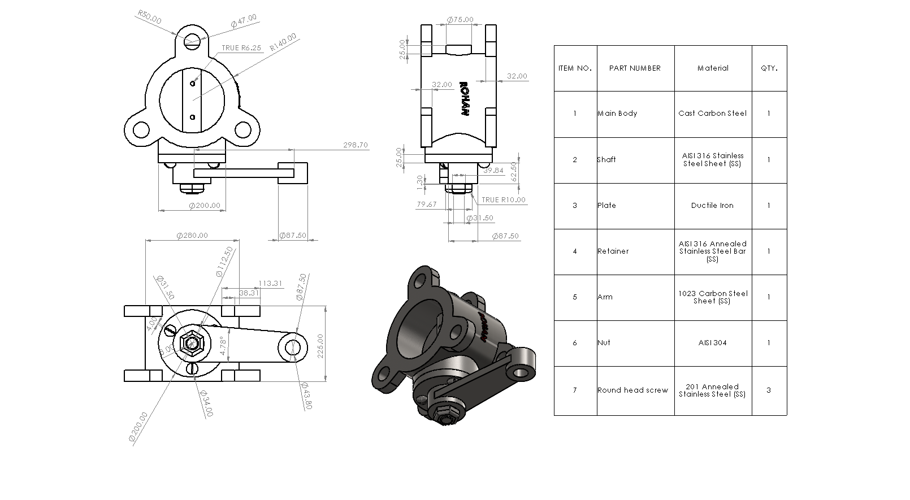
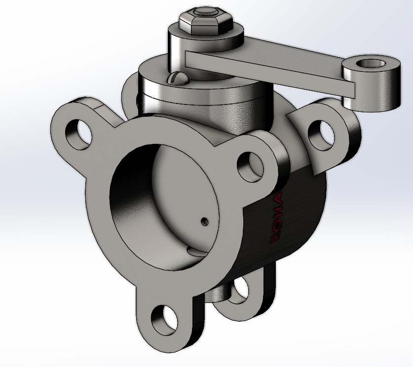
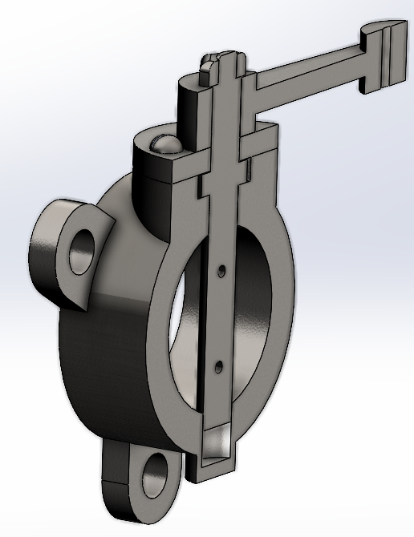
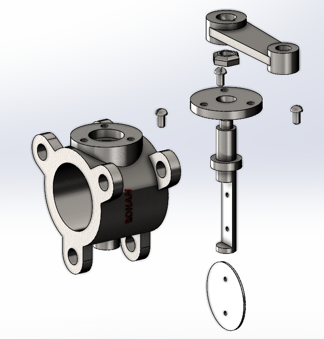

Figure 1 – Drawing sheet & BOM. Orthographic views and key dimensions communicate the body geometry, flange mounting, and shaft features. The bill of materials summarises part count and assigned materials for documentation.
A butterfly valve is a compact flow-control device used to start, stop, or regulate fluid flow in a pipeline. A circular disc rotates inside the valve body: when the disc is aligned with the pipe, flow passes through; when rotated 90°, the disc blocks the passage to shut the line.
This assembly includes a flanged valve body, a central shaft, a rotating disc (butterfly plate), and an external lever arm that drives the rotation. The design highlights how the shaft transfers motion into the disc while the body geometry provides a controlled flow path and mounting features for installation.
Butterfly valves are widely used in HVAC, water distribution, compressed air, and industrial process systems because they are lightweight, quick to operate, and easy to maintain. Modelling this system in SolidWorks helps demonstrate assembly structure, mating strategy, and the functional envelope of the rotating disc inside the body.

Flow-control valve assembly modelled, documented, and animated in SolidWorks.
This project focuses on creating a fully constrained assembly, applying mates to control the disc rotation about the shaft axis, and producing supporting technical views (exploded, section, and drawing with BOM). The motion study is used to validate clearance and demonstrate open/close operation.

Figure 1 – Drawing sheet & BOM. Orthographic views and key dimensions communicate the body geometry, flange mounting, and shaft features. The bill of materials summarises part count and assigned materials for documentation.

Figure 2 – Section view (internal function). The section highlights how the disc sits within the flow path and rotates about the shaft axis, making it easier to understand the open/close envelope and internal clearances.

Figure 3 – Exploded assembly structure. The exploded layout shows the relationship between the valve body, rotating disc, shaft, lever arm and fasteners. This view supports assembly planning and mate verification.
The motion study rotates the shaft to drive the butterfly disc through its operating range. This animation is used to validate alignment, check for interference inside the body, and clearly demonstrate how a butterfly valve regulates flow using a quarter-turn mechanism.